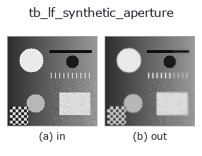

typed op• データ種: lightfield → image
• 呼び出し: fullseye.apply(img, "tb_lf_synthetic_aperture", a=0.5, b=0.5) (2-D は 1 画像 + 2 スカラつまみ a,b∈[0,1] のモデル)

*図は合成の入力 128×128 で実際に走らせた出力。左が入力、右が出力。点群は上から見た散布(明るさ = z)、1-D 列は折れ線、体積は z 方向の最大値投影、動画は中央フレーム、複素画像は振幅、絵にならない返り値は値そのもの。*
*つまみ a は出力を変えない(実測: 0.1 / 0.5 / 0.9 で同一)。*
*つまみ b は出力を変えない(実測: 0.1 / 0.5 / 0.9 で同一)。*
段階(前置きの op → この op。左から順):
▸ tb_lf_synthetic_aperture: stages (docs site)
別の画像でも(合成シーン / 写真 / 硬貨。上段が入力、下段がその出力。つまみは既定):
▸ tb_lf_synthetic_aperture: other inputs (docs site)
整形した開口を通したリフォーカス — `reduce="median"` を指定すれば遮蔽物越しのリフォーカスも可能。
> 以下の詳細説明は原文のままです —— 要約と見出しは訳出済み。
Same shift-and-add geometry as :func:lf_refocus, with two additions:
• *mask* — a `(V, U) weight array from :func:lf_aperture_mask` (or your
own). A small mask is a stopped-down aperture: less defocus blur, less
light. `None` weights every view equally.
• *reduce* — how the aligned views are combined. `mean` is the classical
(and linear) synthetic aperture. `median` is the interesting one: when
a foreground occluder covers a *minority* of the views at a pixel, the
median rejects it and the background behind it is reconstructed —
looking through a fence, or through a rack of parts. `max / min`
are the order-statistic extremes, useful for specular / shadow work.
`median, max and min` use the mask only to *select* views
(weight > 0), because an order statistic has no meaningful weighting;
that is stated here rather than silently ignoring the weights.
The see-through result is not a metaphor. When fewer than half the views
are blocked at a hidden pixel, more than half of them carry the identical
background sample and the median is that sample exactly. Measured
2026-09-01 on a 9x9x64x64 field with an occluder covering 25% of the centre
view at slope 3.0 (blocking at most 46% of the views at any hidden pixel):
RMS against the true, hidden background was 0.0 for `median` and
0.159 for `mean`, with the centre view itself at 0.280. Push the coverage
to 35% (up to 60% of views blocked) and the guarantee is gone — the median
lands at 0.133, worse than nothing.
Returns a `(H, W)` 2-D image.
Raises `ValueError`: *lf* not a valid light field, a *mask* whose
shape is not `(V, U)` or which is non-finite / negative / selects no view,
a non-finite or over-large *slope*, unknown *reduce* / *interp* / *edge*.
Typed bridge of the lightfield op `lf_synthetic_aperture into the 2-D evolution registry: the same implementation, called under the op(v, a, b) convention. This op has no tunable parameter; a and b` are unused.
• サンプルデータ カタログ(DL URL / ライセンス) — 2-D は skimage.data(BSD/public)+ 合成、3-D は実データ源(Stanford/PDS 等)の DL URL。
• 演算子の来歴・参考文献 — この op 族の元になった研究/手法の出典。
下のプログラムは実際に走ることを確かめてある(図と同じ入力)。Studio のヘルプではこのブロックがボタンになり、その場で読み込んで実行できる。
img_to_lightfield 0.50 0.50 tb_lf_synthetic_aperture 0.50 0.50
▸ Load this pipeline · Load & run
次の例は元の台帳 op lf_synthetic_aperture を呼ぶもの。この橋渡し op は同じ実装を fn(v, a, b) 規約に合わせただけなので、挙動はそのまま当てはまる(呼び出し形だけ違う)。
• lightfield_depth — py -3.11 examples/lightfield_depth.py
image を入力に取れる)identity · gaussian · mean_box · bilateral · unsharp · median · min_filter · max_filter
typed)tb_points_to_voxel · tb_estimate_point_normals · tb_iss_keypoints · tb_project_points · tb_render_point_depth · tb_statistical_outlier_removal · tb_radius_outlier_removal · tb_voxel_grid_downsample
*Provenance: ops.py — 2D operator registry. この per-op ノートは tools/opdocs.py md が自動生成(手編集しない)。*
© 2026 Kazufumi Furuse — Fullseye operator documentation. Licensed under Apache-2.0.
{kind=link}
{kind=link}